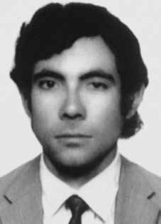

Ronaldo
Mouth
Queiroz
CIRCUNSTÂNCIAS DA MORTE
Ronaldo Mouth Queiroz morreu em São Paulo, no dia 6 de abril de 1973, em circunstâncias ainda não esclarecidas. De acordo com a versão oficial dos fatos apresentada pelos órgãos de repressão do Estado e publicada na edição do Jornal do Brasil de 7 de abril de 1973, Ronaldo Mouth teria morrido em confronto armado com agentes de segurança o Estado, após ter resistido à ordem de prisão.
Um documento do II Exército, encaminhado ao diretor do Departamento de Ordem Política e Social de São Paulo (DOPS/SP) em 26 de abril de 1973, tem as seguintes informações a respeito de Ronaldo: […] no dia 6 de abril de 1973, às 7h40, aproximadamente, foi localizado na esquina da Av. Angélica. Ao ser dada voz de prisão, o mesmo sacou de um revólver calibre 38, reagiu a tiros, sendo então travado “cerrado tiroteio”, vindo a falecer em virtude dos ferimentos recebidos.
O laudo necroscópico do corpo de Ronaldo, assinado pelos legistas Isaac Abramovitc e Orlando Brandão, também confirma a versão oficial dos fatos ao descrever as lesões que provocaram sua morte da seguinte maneira: “[…] na face anterior do hemitórax esquerdo, seis centímetros abaixo, um centímetro para dentro do mamilo esquerdo: o projétil transfixou”, a outra lesão ocorreu “[…] no mento um centímetro abaixo da mucosa do lábio inferior […]”, e o projétil “[…] alojou-se na massa encefálica do hemisfério direito”.
Passados mais de 40 anos da morte de Ronaldo Mouth Queiroz, as investigações realizadas pela Comissão de Familiares de Mortos e Desaparecidos Políticos e, mais recentemente, pela Comissão Nacional da Verdade (CNV) revelaram a existência de indícios que permitem apontar a falsidade da versão divulgada pelos órgãos de repressão, conforme os abaixo relacionados.
Segundo o documento do Instituto Médico-Legal do estado de São Paulo (IML/SP), o corpo de Ronaldo teria chegado ao necrotério às 8 horas do dia 6 de abril de 1973. O mesmo documento registra que a morte teria ocorrido às 7h45. Entretanto, os 15 minutos de diferença entre o horário da morte e o horário de chegada do corpo ao IML seriam insuficientes para o traslado do cadáver entre os dois pontos da cidade de São Paulo. Ademais, até o momento, não foram identificados outros documentos que permitam comprovar a versão oficial de que houve um confronto entre Ronaldo e agentes do Estado, tais como perícia de armas e perícia do local onde o confronto teria acontecido.
Quando o caso de Ronaldo Mouth Queiroz foi submetido à CEMDP, o responsável por sua relatoria, Luís Francisco Carvalho Filho conseguiu localizar uma testemunha do assassinato, Paulo Antônio Guerra, também ex-aluno da Geologia, que assim descreveu o fato: (…) Paulo estava no ponto do ônibus onde ocorreu a morte de Queiroz e viu quando, por volta das 7h30min, três homens desceram de uma perua Veraneio C-14, um japonês, um homem branco forte e outro de barba e jaqueta de náilon azul, e dispararam contra um rapaz cabeludo e barbudo que estava encostado na parede.
O primeiro tiro o derrubou e o segundo foi disparado quando estava caído. Ele viu quando o mesmo homem que disparou os tiros colocou uma arma nas mãos do jovem morto e outra em sua cintura, além de uma agenda verde no bolso da camisa. Diante de protestos dos populares, um homem que reclamava foi preso e levado na viatura. Na época, Paulo não reconheceu seu colega Queiroz, porque ele estava diferente, cabeludo e barbudo.
Em 2012, as circunstâncias da morte de Ronaldo foram mencionadas no livro Memórias de uma Guerra Suja, de autoria do ex-agente da repressão Cláudio Guerra. De acordo com o relato, ele teria recebido ordens para executar uma pessoa em um ponto de ônibus na avenida Angélica, em São Paulo (SP). Cláudio Guerra disse que participaram da ação junto com ele o sargento Jair, o tenente Paulo Jorge (conhecido como Pejota) e Fininho, e que os três teriam executado Ronaldo Mouth Queiroz.
Segundo Cláudio Guerra, a função de Fininho era dirigir a Veraneio e mostrar o alvo. Após terem matado Ronaldo Queiroz, deixaram o local com Fininho na direção. Afirmou, também, que houve um esforço para confundir os populares que assistiram à cena, por meio da difusão de uma versão falsa sobre as características físicas do matador. Ainda, de acordo com Cláudio Guerra, um cidadão que assistiu a tudo foi preso pela equipe de apoio e poderia ter sido eliminado como queima de arquivo.
Caio Túlio Costa, no livro Cale-se, acrescenta outras informações sobre a morte de Ronaldo. O autor narra que a mãe de Ronaldo ficou sabendo de sua morte por meio de uma divulgação em jornal televisivo, no qual foi dito que “(…) durante violento tiroteio com os agentes de segurança, foi morto hoje cedo, em Vila Buarque, bairro próximo ao centro da cidade, o terrorista Ronaldo Mouth Queiroz, o Papa, da organização subversiva ALN”.
A Comissão da Verdade do Estado de São Paulo fez a 50ª Audiência Pública sobre o caso no dia 18 de julho de 2013, na qual foram ouvidos colegas do Curso de Geologia da USP e ex-companheiros de militância política de Ronaldo Mouth Queiroz. Os restos mortais de Ronaldo Mouth Queiroz foram enterrados no Cemitério da Saudade, em São Paulo (SP).
Ronaldo Mouth Queiroz died in São Paulo, on April 6, 1973, under circumstances that have not yet been clarified. According to the official version of the events presented by the State repression bodies and published in the edition of Jornal do Brasil on April 7, 1973, Ronaldo Mouth died in an armed confrontation with State security agents, after resisting the arrest order.
A document from the II Army, sent to the director of the Department of Political and Social Order of São Paulo (DOPS/SP) on April 26, 1973, has the following information about Ronaldo: […] on April 6, 1973, at approximately 7:40 am, he was located on the corner of Av. Angélica. When he was arrested, he took out a 38-caliber revolver, reacted with gunfire, and then a “close firefight” took place, and died as a result of the injuries he received.
The necroscopic report on Ronaldo's body, signed by coroners Isaac Abramovitc and Orlando Brandão, also confirms the official version of the facts by describing the injuries that caused his death as follows: “[…] on the anterior surface of the left hemithorax, six centimeters below, one centimeter into the left nipple: the projectile transfixed”, the other injury occurred “[…] in the chin one centimeter below the mucosa of the lower lip […]”, and the projectile “[…] lodged in the brain mass of the right hemisphere.”
More than 40 years after the death of Ronaldo Mouth Queiroz, investigations carried out by the Commission of Relatives of Political Dead and Disappeared and, more recently, by the National Truth Commission (CNV) revealed the existence of evidence that allows us to point out the falsehood of the version released by the repression bodies, as listed below.
According to the document from the São Paulo State Medical-Legal Institute (IML/SP), Ronaldo's body arrived at the morgue at 8 am on April 6, 1973. The same document records that death occurred at 7:45 am. However, the 15-minute difference between the time of death and the time of arrival of the body at the IML would be insufficient to transfer the corpse between the two points in the city of São Paulo. Furthermore, to date, no other documents have been identified to prove the official version that there was a confrontation between Ronaldo and State agents, such as weapons expertise and inspection of the location where the confrontation allegedly took place.
When the case of Ronaldo Mouth Queiroz was submitted to CEMDP, the person responsible for its report, Luís Francisco Carvalho Filho, managed to locate a witness to the murder, Paulo Antônio Guerra, also a former Geology student, who described the incident as follows: (…) Paulo was at the bus stop where Queiroz's death occurred and saw when, around 7:30 am, three men got out of a Veraneio C-14 station wagon, one Japanese, a strong white man and another from beard and blue nylon jacket, and shot a hairy, bearded young man who was leaning against the wall.
The first shot knocked him down and the second was fired when he was down. He saw when the same man who fired the shots put a gun in the dead young man's hands and another in his waist, as well as a green diary in his shirt pocket. Faced with protests from the public, a man who complained was arrested and taken away in the vehicle. At the time, Paulo didn't recognize his colleague Queiroz, because he looked different, hairy and bearded.
In 2012, the circumstances of Ronaldo's death were mentioned in the book Memórias de uma Guerra Suja, written by former repression agent Cláudio Guerra. According to the report, he had received orders to execute a person at a bus stop on Avenida Angélica, in São Paulo (SP). Cláudio Guerra said that Sergeant Jair, Lieutenant Paulo Jorge (known as Pejota) and Fininho participated in the action along with him, and that the three would have executed Ronaldo Mouth Queiroz.
According to Cláudio Guerra, Fininho's role was to direct Veraneio and show the target. After killing Ronaldo Queiroz, they left the place with Fininho at the wheel. He also stated that there was an effort to confuse people who watched the scene, by disseminating a false version about the killer's physical characteristics. Furthermore, according to Cláudio Guerra, a citizen who watched everything was arrested by the support team and could have been eliminated as a file burning.
Caio Túlio Costa, in the book Cale-se, adds other information about Ronaldo's death. The author narrates that Ronaldo's mother found out about his death through a broadcast on a television newspaper, in which it was said that “(…) during a violent shootout with security agents, the terrorist Ronaldo Mouth Queiroz, the Pope, from the subversive organization ALN, was killed earlier today in Vila Buarque, a neighborhood close to the city center”.
The Truth Commission of the State of São Paulo held the 50th Public Hearing on the case on July 18, 2013, in which colleagues from the Geology Course at USP and former political activists of Ronaldo Mouth Queiroz were interviewed. Ronaldo Mouth Queiroz's mortal remains were buried in the Saudade Cemetery, in São Paulo (SP).
Ronaldo Boca Queiroz murió en São Paulo, el 6 de abril de 1973, en circunstancias que aún no han sido esclarecidas. Según la versión oficial de los hechos presentada por los órganos de represión del Estado y publicada en la edición del Jornal do Brasil del 7 de abril de 1973, Ronaldo Boca murió en un enfrentamiento armado con agentes de seguridad del Estado, tras resistirse a la orden de arresto.
Un documento del II Ejército, enviado al director del Departamento de Orden Político y Social de São Paulo (DOPS/SP) el 26 de abril de 1973, tiene la siguiente información sobre Ronaldo: […] el 6 de abril de 1973, aproximadamente a las 7:40 am, estaba ubicado en la esquina de la Av. Angélica. Al ser detenido sacó un revólver calibre 38, reaccionó con disparos y luego se produjo un “tiroteo cuerpo a cuerpo”, falleciendo a consecuencia de las heridas recibidas.
El informe necroscópico del cuerpo de Ronaldo, firmado por los forenses Isaac Abramovitc y Orlando Brandão, también confirma la versión oficial de los hechos al describir las lesiones que provocaron su muerte de la siguiente manera: “[…] en la superficie anterior del hemitórax izquierdo, seis centímetros más abajo, un centímetro en el pezón izquierdo: el proyectil atravesó”, la otra lesión se produjo “[…] en el mentón, un centímetro por debajo de la mucosa del labio inferior […]”, y el proyectil “[…] se alojó en la masa cerebral del hemisferio derecho”.
A más de 40 años de la muerte de Ronaldo Boca Queiroz, investigaciones realizadas por la Comisión de Familiares de Muertos y Desaparecidos Políticos y, más recientemente, por la Comisión Nacional de la Verdad (CNV) revelaron la existencia de indicios que permiten señalar la falsedad de la versión difundida por los órganos de represión, que se enumeran a continuación.
Según el documento del Instituto Médico Legal del Estado de São Paulo (IML/SP), el cuerpo de Ronaldo llegó a la morgue a las 8 de la mañana del 6 de abril de 1973. El mismo documento registra que la muerte ocurrió a las 7:45 de la mañana. Sin embargo, la diferencia de 15 minutos entre la hora de la muerte y la hora de llegada del cuerpo al IML sería insuficiente para trasladar el cadáver entre los dos puntos de la ciudad de São Paulo. Además, hasta la fecha no se han identificado otros documentos que acrediten la versión oficial de que hubo un enfrentamiento entre Ronaldo y agentes del Estado, como pericias en armas e inspección del lugar donde supuestamente se produjo el enfrentamiento.
Cuando el caso de Ronaldo Boca Queiroz fue presentado al CEMDP, el responsable de su informe, Luís Francisco Carvalho Filho, logró localizar a un testigo del asesinato, Paulo Antônio Guerra, también ex estudiante de Geología, quien describió el incidente de la siguiente manera: (…) Paulo estaba en la parada de autobús donde ocurrió la muerte de Queiroz y vio cuando, alrededor de las 7:30 horas, tres hombres bajaban de una camioneta Veraneio C-14, un japonés, un hombre blanco fuerte y otro de barba y chaqueta de nailon azul, y le disparó a un joven barbudo y peludo que estaba apoyado contra la pared.
El primer disparo lo derribó y el segundo se produjo cuando ya estaba en el suelo. Vio cuando el mismo hombre que realizó los disparos puso un arma en las manos del joven muerto y otra en su cintura, además de un diario verde en el bolsillo de su camisa. Ante las protestas del público, un hombre que se quejó fue detenido y llevado en el vehículo. En ese momento, Paulo no reconoció a su colega Queiroz, porque parecía diferente, peludo y barbudo.
En 2012, las circunstancias de la muerte de Ronaldo fueron mencionadas en el libro Memórias de uma Guerra Suja, escrito por el ex agente represor Cláudio Guerra. Según el informe, habría recibido órdenes de ejecutar a una persona en una parada de autobús de la Avenida Angélica, en São Paulo (SP). Cláudio Guerra dijo que junto a él participaron en la acción el sargento Jair, el teniente Paulo Jorge (conocido como Pejota) y Fininho, y que los tres habrían ejecutado a Ronaldo Boca Queiroz.
Según Cláudio Guerra, el papel de Fininho era orientar a Veraneio y mostrar el objetivo. Luego de matar a Ronaldo Queiroz, abandonaron el lugar con Fininho al volante. También afirmó que se buscó confundir a las personas que presenciaron la escena, difundiendo una versión falsa sobre las características físicas del asesino. Además, según Cláudio Guerra, un ciudadano que observó todo fue detenido por el equipo de apoyo y podría haber sido eliminado como expediente quemado.
Caio Túlio Costa, en el libro Cale-se, añade otras informaciones sobre la muerte de Ronaldo. El autor narra que la madre de Ronaldo se enteró de su muerte a través de una transmisión en un diario de televisión, en la que se decía que “(…) durante un violento tiroteo con agentes de seguridad, el terrorista Ronaldo Boca Queiroz, el Papa, de la organización subversiva ALN, fue asesinado hoy temprano en Vila Buarque, un barrio cercano al centro de la ciudad”.
La Comisión de la Verdad del Estado de São Paulo realizó la 50ª Audiencia Pública sobre el caso, el 18 de julio de 2013, en la que fueron entrevistados colegas del Curso de Geología de la USP y ex militantes políticos de Ronaldo Boca Queiroz. Los restos mortales de Ronaldo Boca Queiroz fueron enterrados en el Cementerio de Saudade, en São Paulo (SP).